今年、最後にぽちったステップモーターの中古４つが無事到着しました。年内発送ありがとうございます。
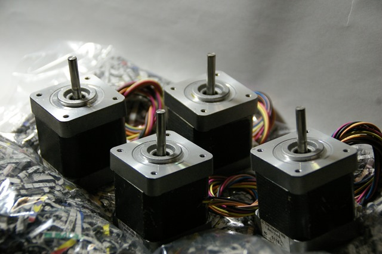
なかなか強そうなステッピングモーターです。緩衝材がエコですね。それに、ずっしりと沈み込み重みがあります。箱には、ニクい配慮のシールが貼ってあります。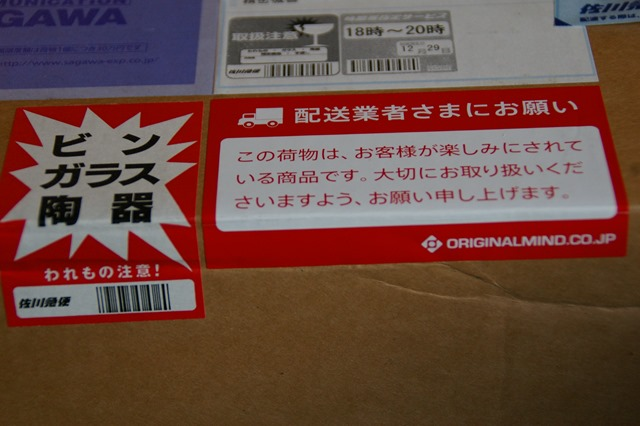
実はこの箱、佐川急便さんがぶつけたようで、箱の一部に穴が開いていました。配達時に現状確認を要求されました。しかし、緩衝材のおかげとブツけどころがよかったようで、中身は大丈夫のようでした。もし、だめだったら電話してくれれば対応するとのこと。
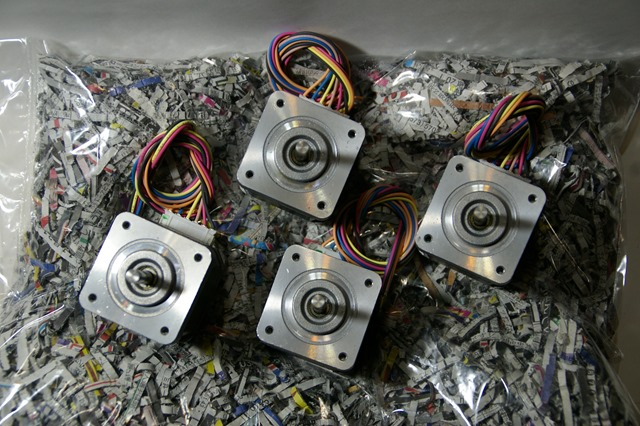
JAPAN SERVO CO., LTD. で、MADE IN INDONESIA のようです。純国産というわけではなさそうです。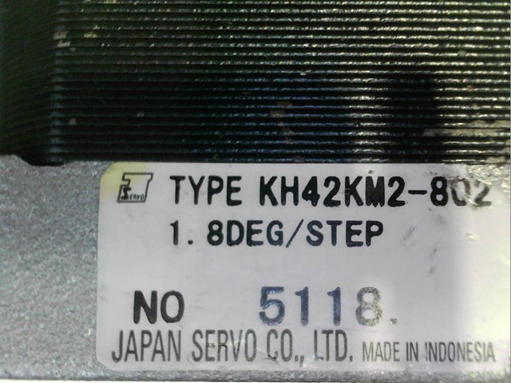
筐体は中古なので少し傷はありますが、問題ないレベルです。
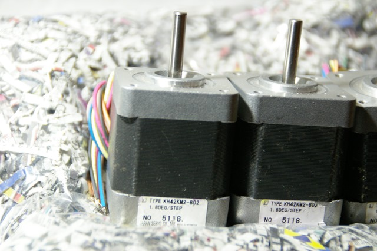
裏の軸受けのベアリングから刻印が見えます。
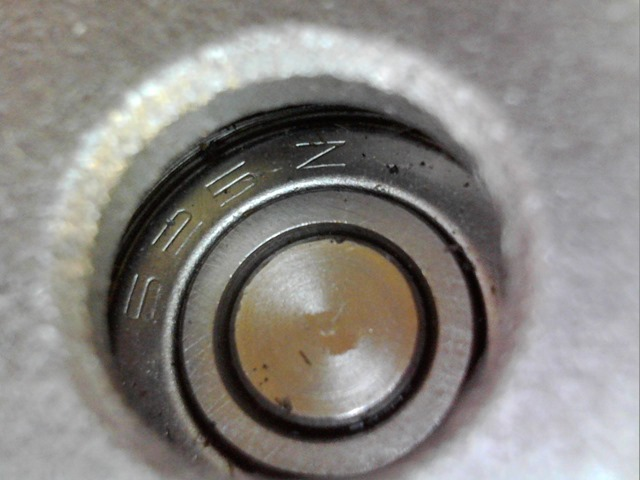
525Z 。じろじろ。SBC と刻印あります。
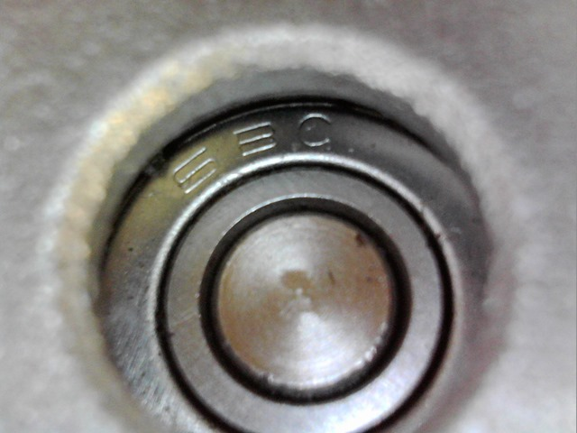
SBC は、リニアシステムの韓国のSBCのことでしょうかね。リニアじゃないのも作っているのでしょうか。日本の品質管理をパスしているベアリングなのでここのは信用できそうですね。記憶しておきます。
ぜんぜん関係ありませんが、韓国といえば、Zoom というメーカーの自転車のパーツを愛用しています。
サイズは仕様書からわかっていますが、実測してみます。42mm 角ですが、実際は、少々小さい感じ。
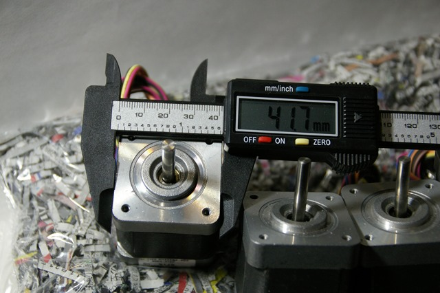
シャフトは5mm
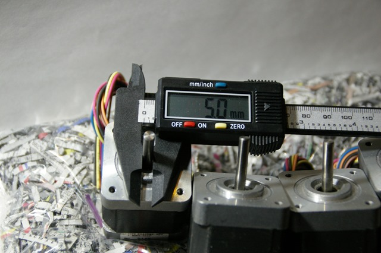
長さは、49.5mm（突出部は除く）
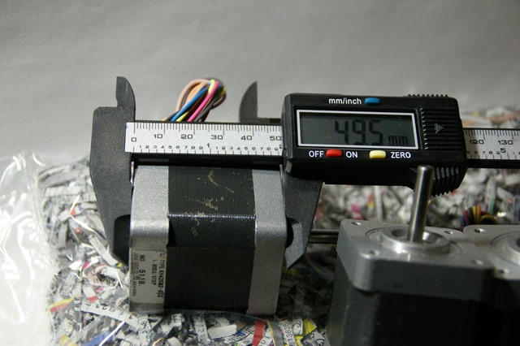
Wanhao の X軸と比べてみると、ぜんぜん長くて強そうです。
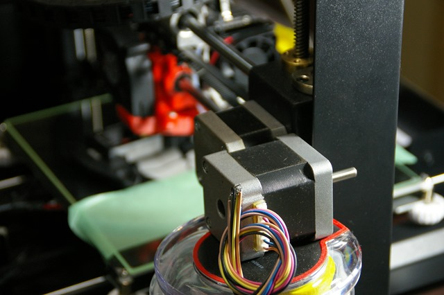
Z軸とほぼ同じサイズです。このくらいの3D プリンター用途なら問題なく使えそうです。
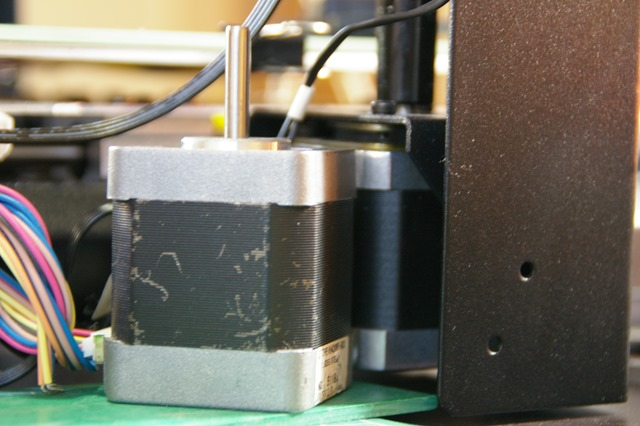
今回は CNC ルータでアルミを削る用途に使うので、それに耐えうるトルクだとうれしいです。このあたりは、作って触ってみないとピンときません。
こんな立派な中古品が480円とは、うれしいですね。オリジナルマインドさんの経営理念が具現化されていて、記憶に残ります。
株式会社 オリジナルマインド オフィシャルサイトより抜粋
ものづくりの楽しさと夢を提供します
経営理念に込めた想い
::私たちは、これからの日本のものづくりは、生産設備による画一的な「製品」づくりから、日本人の繊細な感性を生かした「作品」づくりへ、そして、同じ製品を大量に「製造」する時代から、これまでになかった新しいものを次々と生み出す「創造」へと変わっていくだろうと考えています。そして私たちは、その中心的役割を担うであろう小さなつくり手のお客様に、喜ばれ愛される商品とサービスを提供してゆきます。
::
いいこと、書いてありますね！
さて、ぼちぼちとステッピングモーターを触りながら、D-Slot の駆動部分を考えていくことにします。